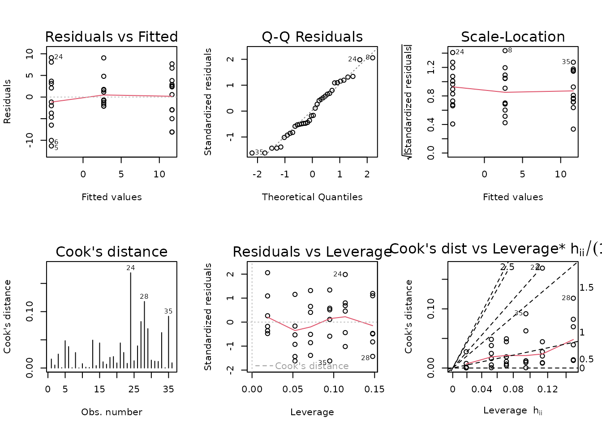

Statistical analyses of post - pre training differences
Tyler Sagendorf
01 May, 2024
Source:vignettes/PHENO_WAT_STATS.Rmd
PHENO_WAT_STATS.Rmd
# Required packages
library(MotrpacRatTraining6moWATData)
library(ggplot2)
library(dplyr)
library(emmeans)
library(tibble)
library(tidyr)
library(purrr)
theme_set(theme_bw()) # base plot theme
# Generate all regression diagnostic plots
plot_lm <- function(x) {
par(mfrow = c(2, 3))
for (i in 1:6)
plot(x, which = i)
par(mfrow = c(1, 1))
}Regression Models
We will fit OLS or WLS regression models with sex, timepoint, and their interaction as predictors of the (post - pre) training differences for each phenotypic measure. Only those samples selected for -omics analysis will be considered. If a WLS model is used, the weights will be reciprocal group variances.
NMR Weight
# Plot points
ggplot(PHENO_WAT, aes(x = timepoint, y = post_weight - pre_weight,
color = omics_analysis)) +
geom_point(position = position_jitterdodge(jitter.width = 0.15,
jitter.height = 0,
dodge.width = 0.4),
na.rm = TRUE, alpha = 0.5) +
facet_grid(~ sex, drop = TRUE) +
labs(y = "NMR weight (post - pre)") +
scale_color_manual(values = c("red", "black"),
breaks = c(TRUE, FALSE)) +
theme(axis.text.x = element_text(angle = 90, hjust = 1, vjust = 0.5),
legend.position = "bottom",
legend.direction = "horizontal")
There is one negative outlying value in the SED male group that may affect the model fit. We will start with a WLS model, since we observe different group variances.
wt.weight <- filter(PHENO_WAT, omics_analysis) %>%
group_by(sex, timepoint) %>%
mutate(1 / var(post_weight - pre_weight, na.rm = TRUE)) %>%
pull(-1)
fit.weight <- lm(I(post_weight - pre_weight) ~ sex * timepoint,
weights = wt.weight,
data = filter(PHENO_WAT, omics_analysis))
plot_lm(fit.weight)The diagnostic plots appear relatively fine. We will try to simplify the model.
anova(fit.weight, test = "F")
#> Analysis of Variance Table
#>
#> Response: I(post_weight - pre_weight)
#> Df Sum Sq Mean Sq F value Pr(>F)
#> sex 1 277.235 277.235 277.2347 < 2.2e-16 ***
#> timepoint 2 44.945 22.472 22.4723 1.086e-06 ***
#> sex:timepoint 2 8.390 4.195 4.1949 0.02475 *
#> Residuals 30 30.000 1.000
#> ---
#> Signif. codes: 0 '***' 0.001 '**' 0.01 '*' 0.05 '.' 0.1 ' ' 1All terms are significant. We will not change the model.
summary(fit.weight)
#>
#> Call:
#> lm(formula = I(post_weight - pre_weight) ~ sex * timepoint, data = filter(PHENO_WAT,
#> omics_analysis), weights = wt.weight)
#>
#> Weighted Residuals:
#> Min 1Q Median 3Q Max
#> -1.82069 -0.69316 0.03128 0.59206 1.63424
#>
#> Coefficients:
#> Estimate Std. Error t value Pr(>|t|)
#> (Intercept) 22.583 1.897 11.902 6.85e-13 ***
#> sexMale -5.383 8.521 -0.632 0.532317
#> timepoint4W -16.933 3.071 -5.514 5.46e-06 ***
#> timepoint8W -12.550 3.154 -3.980 0.000404 ***
#> sexMale:timepoint4W -9.117 10.888 -0.837 0.409040
#> sexMale:timepoint8W -22.317 8.994 -2.481 0.018915 *
#> ---
#> Signif. codes: 0 '***' 0.001 '**' 0.01 '*' 0.05 '.' 0.1 ' ' 1
#>
#> Residual standard error: 1 on 30 degrees of freedom
#> Multiple R-squared: 0.9168, Adjusted R-squared: 0.9029
#> F-statistic: 66.11 on 5 and 30 DF, p-value: 2.764e-15NMR Fat Mass
# Plot points
ggplot(PHENO_WAT, aes(x = timepoint, y = post_fat - pre_fat,
color = omics_analysis)) +
geom_point(position = position_jitterdodge(jitter.width = 0.15,
jitter.height = 0,
dodge.width = 0.4),
na.rm = TRUE, alpha = 0.5) +
facet_grid(~ sex, drop = TRUE) +
labs(y = "NMR Fat (post - pre)") +
scale_color_manual(values = c("red", "black"),
breaks = c(TRUE, FALSE)) +
theme(axis.text.x = element_text(angle = 90, hjust = 1, vjust = 0.5),
legend.position = "bottom",
legend.direction = "horizontal")We observe unequal group variances, and an outlying value in the 4W males. We will fit a WLS model with reciprocal group variances as weights.
wt.fat <- filter(PHENO_WAT, omics_analysis) %>%
group_by(sex, timepoint) %>%
mutate(1 / var(post_fat - pre_fat, na.rm = TRUE)) %>%
pull(-1)
fit.fat <- lm(I(post_fat - pre_fat) ~ sex * timepoint,
weights = wt.fat,
data = filter(PHENO_WAT, omics_analysis))
plot_lm(fit.fat)The diagnostic plots seem mostly fine. We will try to simplify the model.
anova(fit.fat, test = "F")
#> Analysis of Variance Table
#>
#> Response: I(post_fat - pre_fat)
#> Df Sum Sq Mean Sq F value Pr(>F)
#> sex 1 41.089 41.089 41.089 4.458e-07 ***
#> timepoint 2 117.838 58.919 58.919 4.074e-11 ***
#> sex:timepoint 2 40.251 20.125 20.125 2.865e-06 ***
#> Residuals 30 30.000 1.000
#> ---
#> Signif. codes: 0 '***' 0.001 '**' 0.01 '*' 0.05 '.' 0.1 ' ' 1All terms are significant.
summary(fit.fat)
#>
#> Call:
#> lm(formula = I(post_fat - pre_fat) ~ sex * timepoint, data = filter(PHENO_WAT,
#> omics_analysis), weights = wt.fat)
#>
#> Weighted Residuals:
#> Min 1Q Median 3Q Max
#> -1.94173 -0.68699 0.06809 0.64668 1.85904
#>
#> Coefficients:
#> Estimate Std. Error t value Pr(>|t|)
#> (Intercept) 5.057 1.108 4.562 8.01e-05 ***
#> sexMale -1.248 1.694 -0.737 0.46704
#> timepoint4W -6.519 1.229 -5.303 9.90e-06 ***
#> timepoint8W -4.952 1.738 -2.850 0.00783 **
#> sexMale:timepoint4W -2.122 3.931 -0.540 0.59335
#> sexMale:timepoint8W -15.505 2.499 -6.203 7.91e-07 ***
#> ---
#> Signif. codes: 0 '***' 0.001 '**' 0.01 '*' 0.05 '.' 0.1 ' ' 1
#>
#> Residual standard error: 1 on 30 degrees of freedom
#> Multiple R-squared: 0.8691, Adjusted R-squared: 0.8473
#> F-statistic: 39.84 on 5 and 30 DF, p-value: 2.299e-12NMR % Fat
# Plot points
ggplot(PHENO_WAT, aes(x = timepoint, y = post_fat_pct - pre_fat_pct,
color = omics_analysis)) +
geom_point(position = position_jitterdodge(jitter.width = 0.15,
jitter.height = 0,
dodge.width = 0.4),
na.rm = TRUE, alpha = 0.5) +
facet_grid(~ sex, drop = TRUE) +
labs(y = "NMR % Fat (post - pre)") +
scale_color_manual(values = c("red", "black"),
breaks = c(TRUE, FALSE)) +
theme(axis.text.x = element_text(angle = 90, hjust = 1, vjust = 0.5),
legend.position = "bottom",
legend.direction = "horizontal")We observe the same outlying value in the 4W male group. We will fit an OLS model first.
fit.fat_pct <- lm(I(post_fat_pct - pre_fat_pct) ~ sex * timepoint,
data = filter(PHENO_WAT, omics_analysis))
plot_lm(fit.fat_pct)We will incorporate reciprocal group variances as weights.
wt.fat_pct <- filter(PHENO_WAT, omics_analysis) %>%
group_by(sex, timepoint) %>%
mutate(1 / var(post_fat_pct - pre_fat_pct, na.rm = TRUE)) %>%
pull(-1)
fit.fat_pct <- update(fit.fat_pct, weights = wt.fat_pct)
plot_lm(fit.fat_pct)The diagnostic plots look better, though still not great. We will try to simplify the model.
anova(fit.fat_pct, test = "F")
#> Analysis of Variance Table
#>
#> Response: I(post_fat_pct - pre_fat_pct)
#> Df Sum Sq Mean Sq F value Pr(>F)
#> sex 1 28.815 28.815 28.8154 8.241e-06 ***
#> timepoint 2 150.158 75.079 75.0792 2.099e-12 ***
#> sex:timepoint 2 13.206 6.603 6.6028 0.004205 **
#> Residuals 30 30.000 1.000
#> ---
#> Signif. codes: 0 '***' 0.001 '**' 0.01 '*' 0.05 '.' 0.1 ' ' 1All terms are significant, so we will not update the model.
summary(fit.fat_pct)
#>
#> Call:
#> lm(formula = I(post_fat_pct - pre_fat_pct) ~ sex * timepoint,
#> data = filter(PHENO_WAT, omics_analysis), weights = wt.fat_pct)
#>
#> Weighted Residuals:
#> Min 1Q Median 3Q Max
#> -1.96425 -0.64972 0.05565 0.63247 1.87436
#>
#> Coefficients:
#> Estimate Std. Error t value Pr(>|t|)
#> (Intercept) 2.8000 0.6143 4.558 8.09e-05 ***
#> sexMale -1.6833 0.7208 -2.335 0.02641 *
#> timepoint4W -3.6000 0.6797 -5.296 1.01e-05 ***
#> timepoint8W -2.6667 0.9687 -2.753 0.00993 **
#> sexMale:timepoint4W 0.8833 1.3278 0.665 0.51095
#> sexMale:timepoint8W -3.4167 1.1011 -3.103 0.00415 **
#> ---
#> Signif. codes: 0 '***' 0.001 '**' 0.01 '*' 0.05 '.' 0.1 ' ' 1
#>
#> Residual standard error: 1 on 30 degrees of freedom
#> Multiple R-squared: 0.865, Adjusted R-squared: 0.8425
#> F-statistic: 38.44 on 5 and 30 DF, p-value: 3.636e-12VO\(_2\)max Relative to Body Mass
We will look at VO\(_2\)max (\(\text{mL} \cdot (\text{kg body mass})^{-1} \cdot \text{min}^{-1}\)).
# Plot points
ggplot(PHENO_WAT, aes(x = timepoint,
y = post_vo2max_ml_kg_min - pre_vo2max_ml_kg_min,
color = omics_analysis)) +
geom_point(position = position_jitterdodge(jitter.width = 0.15,
jitter.height = 0,
dodge.width = 0.4),
na.rm = TRUE, alpha = 0.5) +
facet_grid(~ sex, drop = TRUE) +
labs(y = "Absolute VO2max (post - pre)") +
scale_color_manual(values = c("red", "black"),
breaks = c(TRUE, FALSE)) +
theme(axis.text.x = element_text(angle = 90, hjust = 1, vjust = 0.5),
legend.position = "bottom",
legend.direction = "horizontal")The SED female group has a large outlying value. We will begin by fitting an OLS model.
fit.vo2max_rel <- lm(I(post_vo2max_ml_kg_min - pre_vo2max_ml_kg_min) ~
sex * timepoint,
data = filter(PHENO_WAT, omics_analysis))
plot_lm(fit.vo2max_rel)We will incorporate reciprocal group variances as weights.
wt.vo2max_rel <- filter(PHENO_WAT, omics_analysis) %>%
group_by(sex, timepoint) %>%
mutate(1 / var(post_vo2max_ml_kg_min - pre_vo2max_ml_kg_min,
na.rm = TRUE)) %>%
pull(-1)
fit.vo2max_rel <- update(fit.vo2max_rel, weights = wt.vo2max_rel)
plot_lm(fit.vo2max_rel)The diagnostic plots look mostly fine. We will try to simplify the model.
anova(fit.vo2max_rel, test = "F")
#> Analysis of Variance Table
#>
#> Response: I(post_vo2max_ml_kg_min - pre_vo2max_ml_kg_min)
#> Df Sum Sq Mean Sq F value Pr(>F)
#> sex 1 0.560 0.5598 0.5598 0.4602
#> timepoint 2 48.662 24.3311 24.3311 5.252e-07 ***
#> sex:timepoint 2 4.093 2.0464 2.0464 0.1469
#> Residuals 30 30.000 1.0000
#> ---
#> Signif. codes: 0 '***' 0.001 '**' 0.01 '*' 0.05 '.' 0.1 ' ' 1Only timepoint appears significant.
fit.vo2max_rel.1 <- update(fit.vo2max_rel, formula = . ~ timepoint)
anova(fit.vo2max_rel.1, fit.vo2max_rel, test = "F")
#> Analysis of Variance Table
#>
#> Model 1: I(post_vo2max_ml_kg_min - pre_vo2max_ml_kg_min) ~ timepoint
#> Model 2: I(post_vo2max_ml_kg_min - pre_vo2max_ml_kg_min) ~ sex * timepoint
#> Res.Df RSS Df Sum of Sq F Pr(>F)
#> 1 33 34.093
#> 2 30 30.000 3 4.0927 1.3642 0.2726There is no significant difference between the models, so we will use the simpler one.
fit.vo2max_rel <- fit.vo2max_rel.1
plot_lm(fit.vo2max_rel)
The diagnostic plots look mostly fine.
summary(fit.vo2max_rel)
#>
#> Call:
#> lm(formula = I(post_vo2max_ml_kg_min - pre_vo2max_ml_kg_min) ~
#> timepoint, data = filter(PHENO_WAT, omics_analysis), weights = wt.vo2max_rel)
#>
#> Weighted Residuals:
#> Min 1Q Median 3Q Max
#> -1.6005 -0.6198 -0.1728 0.6841 2.0732
#>
#> Coefficients:
#> Estimate Std. Error t value Pr(>|t|)
#> (Intercept) -4.151 1.647 -2.521 0.016724 *
#> timepoint4W 6.864 1.757 3.907 0.000438 ***
#> timepoint8W 15.809 2.310 6.844 8.23e-08 ***
#> ---
#> Signif. codes: 0 '***' 0.001 '**' 0.01 '*' 0.05 '.' 0.1 ' ' 1
#>
#> Residual standard error: 1.016 on 33 degrees of freedom
#> Multiple R-squared: 0.5908, Adjusted R-squared: 0.566
#> F-statistic: 23.82 on 2 and 33 DF, p-value: 3.954e-07VO\(_2\)max Relative to Lean Mass
We will look at VO\(_2\)max (\(\text{mL} \cdot (\text{kg lean mass})^{-1} \cdot \text{min}^{-1}\)).
# Plot points
ggplot(PHENO_WAT, aes(x = timepoint,
y = post_vo2max_ml_kg_lean_min - pre_vo2max_ml_kg_lean_min,
color = omics_analysis)) +
geom_point(position = position_jitterdodge(jitter.width = 0.15,
jitter.height = 0,
dodge.width = 0.4),
na.rm = TRUE, alpha = 0.5) +
facet_grid(~ sex, drop = TRUE) +
labs(y = "Relative VO2max (post - pre)") +
scale_color_manual(values = c("red", "black"),
breaks = c(TRUE, FALSE)) +
theme(axis.text.x = element_text(angle = 90, hjust = 1, vjust = 0.5),
legend.position = "bottom",
legend.direction = "horizontal")There is a large outlying value in the SED female group, though it is comparable to observations of samples not selected for -omics analyses. We will fit a WLS model with reciprocal group variances as weights.
wt.vo2max_rel_lean <- filter(PHENO_WAT, omics_analysis) %>%
group_by(sex, timepoint) %>%
mutate(1 / var(post_vo2max_ml_kg_lean_min - pre_vo2max_ml_kg_lean_min,
na.rm = TRUE)) %>%
pull(-1)
fit.vo2max_rel_lean <- lm(I(post_vo2max_ml_kg_lean_min -
pre_vo2max_ml_kg_lean_min) ~
sex * timepoint,
weights = wt.vo2max_rel_lean,
data = filter(PHENO_WAT, omics_analysis))
plot_lm(fit.vo2max_rel_lean)The diagnostic plots look fine. We will try to simplify the model.
anova(fit.vo2max_rel_lean, test = "F")
#> Analysis of Variance Table
#>
#> Response: I(post_vo2max_ml_kg_lean_min - pre_vo2max_ml_kg_lean_min)
#> Df Sum Sq Mean Sq F value Pr(>F)
#> sex 1 12.0459 12.0459 12.0459 0.001596 **
#> timepoint 2 14.5324 7.2662 7.2662 0.002671 **
#> sex:timepoint 2 1.1653 0.5827 0.5827 0.564598
#> Residuals 30 30.0000 1.0000
#> ---
#> Signif. codes: 0 '***' 0.001 '**' 0.01 '*' 0.05 '.' 0.1 ' ' 1The interaction is not significant.
fit.vo2max_rel_lean <- update(fit.vo2max_rel_lean,
formula = . ~ sex + timepoint)
plot_lm(fit.vo2max_rel_lean)The diagnostic plots look mostly fine.
summary(fit.vo2max_rel_lean)
#>
#> Call:
#> lm(formula = I(post_vo2max_ml_kg_lean_min - pre_vo2max_ml_kg_lean_min) ~
#> sex + timepoint, data = filter(PHENO_WAT, omics_analysis),
#> weights = wt.vo2max_rel_lean)
#>
#> Weighted Residuals:
#> Min 1Q Median 3Q Max
#> -1.5507 -0.7169 -0.2395 0.6610 1.7870
#>
#> Coefficients:
#> Estimate Std. Error t value Pr(>|t|)
#> (Intercept) 7.6791 3.8610 1.989 0.0553 .
#> sexMale -8.9977 3.3551 -2.682 0.0115 *
#> timepoint4W 0.6332 3.6393 0.174 0.8630
#> timepoint8W 13.2604 4.3147 3.073 0.0043 **
#> ---
#> Signif. codes: 0 '***' 0.001 '**' 0.01 '*' 0.05 '.' 0.1 ' ' 1
#>
#> Residual standard error: 0.9869 on 32 degrees of freedom
#> Multiple R-squared: 0.4603, Adjusted R-squared: 0.4097
#> F-statistic: 9.097 on 3 and 32 DF, p-value: 0.0001679Comparisons
We will test whether the mean of each timepoint is significantly different from 0 by sex, if sex was included as a predictor. P-values will be adjusted across each set of 3 comparisons by sex using the Holm method.
## Create emm_list objects
model_list <- list("NMR Weight" = fit.weight,
"NMR Fat Mass" = fit.fat,
"NMR % Fat" = fit.fat_pct,
"VO2max (relative to body mass)" = fit.vo2max_rel,
"VO2max (relative to lean mass)" = fit.vo2max_rel_lean)
# Extract model info
model_df <- model_list %>%
map_chr(.f = ~ paste(deparse(.x[["call"]]), collapse = "")) %>%
enframe(name = "response",
value = "model") %>%
mutate(model = gsub("(?<=[\\s])\\s*|^\\s+|\\s+$", "", model, perl = TRUE),
model_type = sub("^([^\\(]+).*", "\\1", model),
formula = sub(".*formula = ([^,]+),.*", "\\1", model),
family = sub(".*family = ([^\\)]+\\)),.*", "\\1", model),
family = ifelse(model_type == "lm", "gaussian", family),
# if weights were used, they were reciprocal group variances
weights = ifelse(grepl("weights = ", model),
"reciprocal group variances", NA)) %>%
dplyr::select(-model)
# Results
PHENO_WAT_STATS <- map(model_list, function(mod_i) {
terms_i <- attr(terms(mod_i), which = "term.labels")
by <- intersect("sex", terms_i)
if (length(by) == 0) {
by <- NULL
}
emmeans(mod_i, specs = "timepoint", by = by,
infer = TRUE, adjust = "holm") %>%
summary() %>%
as.data.frame()
}) %>%
enframe(name = "response") %>%
unnest(value) %>%
mutate(signif = cut(p.value,
breaks = c(0, 0.001, 0.01, 0.05, 1),
labels = c("***", "**", "*", ""),
include.lowest = TRUE, right = FALSE,
ordered_result = TRUE)) %>%
relocate(p.value, .before = signif) %>%
left_join(model_df, by = "response") %>%
pivot_longer(cols = contains(".ratio"),
names_to = "statistic_type",
values_to = "statistic",
values_drop_na = TRUE) %>%
relocate(starts_with("statistic"), .before = p.value)See ?PHENO_WAT_STATS for details.
print.data.frame(head(PHENO_WAT_STATS))
#> response timepoint sex emmean SE df lower.CL upper.CL
#> 1 NMR Weight SED Female 22.58333 1.897440 30 17.7719163 27.394750
#> 2 NMR Weight 4W Female 5.65000 2.414781 30 -0.4732603 11.773260
#> 3 NMR Weight 8W Female 10.03333 2.518818 30 3.6462616 16.420405
#> 4 NMR Weight SED Male 17.20000 8.306985 30 -3.8643675 38.264368
#> 5 NMR Weight 4W Male -8.85000 6.333443 30 -24.9099749 7.209975
#> 6 NMR Weight 8W Male -17.66667 1.390603 30 -21.1928775 -14.140456
#> statistic_type statistic p.value signif model_type
#> 1 t.ratio 11.902003 2.054156e-12 *** lm
#> 2 t.ratio 2.339757 2.614292e-02 * lm
#> 3 t.ratio 3.983350 7.994337e-04 *** lm
#> 4 t.ratio 2.070547 9.420456e-02 lm
#> 5 t.ratio -1.397344 1.725599e-01 lm
#> 6 t.ratio -12.704317 3.972948e-13 *** lm
#> formula family
#> 1 I(post_weight - pre_weight) ~ sex * timepoint gaussian
#> 2 I(post_weight - pre_weight) ~ sex * timepoint gaussian
#> 3 I(post_weight - pre_weight) ~ sex * timepoint gaussian
#> 4 I(post_weight - pre_weight) ~ sex * timepoint gaussian
#> 5 I(post_weight - pre_weight) ~ sex * timepoint gaussian
#> 6 I(post_weight - pre_weight) ~ sex * timepoint gaussian
#> weights
#> 1 reciprocal group variances
#> 2 reciprocal group variances
#> 3 reciprocal group variances
#> 4 reciprocal group variances
#> 5 reciprocal group variances
#> 6 reciprocal group variancesSession Info
sessionInfo()
#> R version 4.4.0 (2024-04-24)
#> Platform: x86_64-pc-linux-gnu
#> Running under: Ubuntu 22.04.4 LTS
#>
#> Matrix products: default
#> BLAS: /usr/lib/x86_64-linux-gnu/openblas-pthread/libblas.so.3
#> LAPACK: /usr/lib/x86_64-linux-gnu/openblas-pthread/libopenblasp-r0.3.20.so; LAPACK version 3.10.0
#>
#> locale:
#> [1] LC_CTYPE=C.UTF-8 LC_NUMERIC=C LC_TIME=C.UTF-8
#> [4] LC_COLLATE=C.UTF-8 LC_MONETARY=C.UTF-8 LC_MESSAGES=C.UTF-8
#> [7] LC_PAPER=C.UTF-8 LC_NAME=C LC_ADDRESS=C
#> [10] LC_TELEPHONE=C LC_MEASUREMENT=C.UTF-8 LC_IDENTIFICATION=C
#>
#> time zone: UTC
#> tzcode source: system (glibc)
#>
#> attached base packages:
#> [1] stats graphics grDevices utils datasets methods base
#>
#> other attached packages:
#> [1] purrr_1.0.2 tidyr_1.3.1
#> [3] tibble_3.2.1 emmeans_1.10.1
#> [5] dplyr_1.1.4 ggplot2_3.5.1
#> [7] MotrpacRatTraining6moWATData_2.0.0
#>
#> loaded via a namespace (and not attached):
#> [1] gtable_0.3.5 jsonlite_1.8.8 highr_0.10 compiler_4.4.0
#> [5] tidyselect_1.2.1 jquerylib_0.1.4 systemfonts_1.0.6 scales_1.3.0
#> [9] textshaping_0.3.7 yaml_2.3.8 fastmap_1.1.1 R6_2.5.1
#> [13] labeling_0.4.3 generics_0.1.3 knitr_1.46 htmlwidgets_1.6.4
#> [17] desc_1.4.3 munsell_0.5.1 bslib_0.7.0 pillar_1.9.0
#> [21] rlang_1.1.3 utf8_1.2.4 cachem_1.0.8 xfun_0.43
#> [25] fs_1.6.4 sass_0.4.9 estimability_1.5 memoise_2.0.1
#> [29] cli_3.6.2 withr_3.0.0 pkgdown_2.0.9 magrittr_2.0.3
#> [33] digest_0.6.35 grid_4.4.0 mvtnorm_1.2-4 lifecycle_1.0.4
#> [37] vctrs_0.6.5 evaluate_0.23 glue_1.7.0 farver_2.1.1
#> [41] ragg_1.3.0 fansi_1.0.6 colorspace_2.1-0 rmarkdown_2.26
#> [45] tools_4.4.0 pkgconfig_2.0.3 htmltools_0.5.8.1